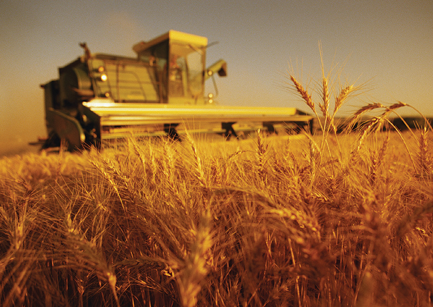

Suprafața agricolă
Având o suprafață agricolă de 14.741 mii hectare (sau 61,8% din suprafața totală a țării) în anul 2005,  România dispune de resurse agricole importante în Europa Centrală și de Est. Deși zone semnificative din suprafața agricolă utilizată sunt clasificate ca fiind zone defavorizate, condițiile pedologice sunt deosebit de favorabile activităților agricole de producție în regiunile de sud și de vest ale țării.
În iulie 2011, suprafața agricolă a României era de 14,7 milioane de hectare, dintre care 9,4 milioane hectare teren arabil (63,9%), 3,3 milioane hectare pășuni (22,4%), 1,5 milioane hectare fânețe (10,2%), 218.000 hectare vii (1,5%) și 206.000 hectare livezi și pepiniere (1,4%).
Suprafața agricolă a României a scăzut ușor de la un an la altul. Transferul suprafețelor de teren către sectorul forestier și al construcțiilor a constituit cauza principală a reducerii suprafaței agricole în ultimii douăzeci de ani. Reducerea suprafețelor de teren, prin includerea acestora în zona urbană, reprezintă un fenomen întâlnit în zonele cu productivitate mai mare, în timp ce schimbarea categoriei de folosință a terenului agricol în cel forestier apare, în special, în zonele defavorizate. Pădurile acoperă o suprafață importantă, însă se situează încă sub potențial.
Conform I.N.S., în 2006 au fost cultivate 991.000 hectare cu floarea-soarelui, 191.000 hectare cu soia și 110.000 hectare cu rapiță. În anul 2009, România a cultivat cereale pe o suprafață de 5,3 milioane hectare, în creștere cu 145.000 ha. În anul 2008, la nivel național, suprafața destinată cerealelor și plantelor tehnice a crescut cu 15% față de anul 2007, de la 5,6 milioane de hectare la 6,6 milioane de hectare.
Suprafața dedicată pomiculturii s-a diminuat după Revoluție. Astfel, suprafața de livezi a scăzut de la 239,5 mii hectare în anul 1989, la 196 mii de hectare în 2001 și 50 mii de hectare în 2011.